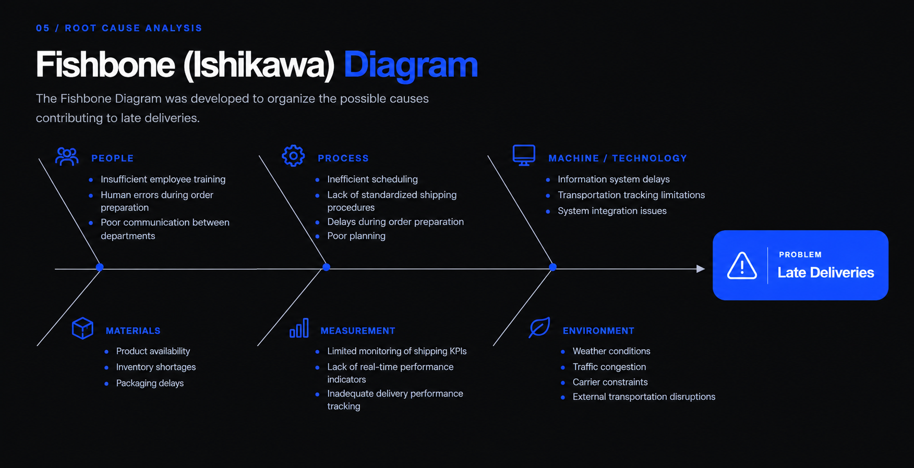

Supply chain transactions analyzed.
PROJECT 03 · LEAN SIX SIGMA
Supply Chain Delivery Performance Analysis.
Applying Lean Six Sigma and statistical analysis to identify the operational factors associated with late deliveries across 180,519 supply chain orders.
01 · DEFINE
Understanding the delivery problem.
Late deliveries can affect customer satisfaction, transportation efficiency and overall supply chain performance. The objective was to determine which operational factors were associated with delivery performance and identify opportunities for improvement.
BUSINESS CONTEXT
Delivery performance was analysed as an operational problem rather than only as a final KPI. The objective was to understand where delivery performance was deteriorating and which factors were associated with late orders.
OBJECTIVE
Determine the operational factors associated with delivery performance and identify where improvement efforts should concentrate.
BUSINESS QUESTION
Which operational factors significantly influence delivery performance?
Lean Six Sigma DMAIC was combined with statistical analysis to move from a broad delivery problem toward measurable operational evidence.
02 · MEASURE
The problem, measured.
The delivery problem was quantified across 180,519 supply chain transactions to establish the scale of the gap between planned and actual shipping performance.
Orders classified as late delivery.
More than half of analyzed orders were late.
Average actual shipping duration.
SCHEDULED SHIPPING
2.93 days
Average scheduled shipping duration.
SHIPPING DEVIATION
+0.57 days
Actual shipping time exceeded scheduled duration by approximately half a day on average.
KEY FINDING
Delivery performance showed a measurable gap.
The difference between scheduled and actual shipping provided a clear starting point for deeper analysis.
03 · ANALYZE
Not every shipping mode performs the same.
The first analysis examined whether delivery performance differed across shipping modes and whether the observed differences were statistically significant.
STANDARD CLASS
38%
Late delivery
SAME DAY
46%
Late delivery
SECOND CLASS
77%
Late delivery
FIRST CLASS
95%
Late delivery
STATISTICAL TEST
Chi-Square Test
RESULT
p < 0.001
DECISION
Reject H₀
CONCLUSION
The analysis indicates a statistically significant association between shipping mode and late-delivery performance.
ANALYZE · STATISTICS
Testing the other relationships.
Additional statistical tests were used to distinguish significant relationships from variables that did not provide strong evidence of association with delivery performance.
p = 0.070
No statistically significant association was identified between market and the compared delivery outcome.
F = 23,246
Average shipping delay differed significantly across shipping modes.
r = -0.0056
The correlation was negligible, indicating almost no linear relationship between the compared variables.
p = 0.124
No statistically significant difference was identified in the compared sales-per-customer distributions.
03 / ROOT CAUSE ANALYSIS
From statistical evidence to potential causes.
Statistical evidence identifies where the problem is concentrated. Root cause analysis was then used to investigate the operational mechanisms behind the observed delivery performance.
VISUAL 01
FISHBONE DIAGRAM

ROOT CAUSE ANALYSIS · 5 WHYS
Asking why, five times.
The 5 Whys approach was used to move from the visible delivery problem toward the underlying process and monitoring issues.
PROBLEM STATEMENT
Late deliveries occur frequently across supply chain transactions.
Because shipments are not always delivered within the scheduled time.
Because some shipping modes experience longer transportation times than others.
Because transportation planning and carrier performance are inconsistent.
Because shipping performance is not continuously monitored using standardized KPIs.
Because improvement actions are reactive rather than based on continuous performance monitoring.
ROOT CAUSE
Lack of standardized monitoring and continuous evaluation of shipping performance.
FMEA · PRIORITIZATION
Prioritizing the failure modes.
The purpose of the FMEA is to identify potential failures in the supply chain process, assess their impact, and prioritize improvement actions using the Risk Priority Number (RPN).
RISK PRIORITY NUMBER (RPN)
RPN = Severity (S) × Occurrence (O) × Detection (D)
Severity (S): Impact of failure (1 = Very Low, 10 = Very High)
Occurrence (O): Frequency of failure (1 = Rare, 10 = Very Frequent)
Detection (D): Difficulty to detect before reaching customer (1 = Easily Detected, 10 = Hard to Detect)
| Process Step | Failure Mode | Possible Effect | Possible Cause | S | O | D | RPN | Recommended Action |
|---|---|---|---|---|---|---|---|---|
| Transportation | Carrier delay | Late delivery | Traffic, carrier performance | 9 | 7 | 5 | 315 | Monitor carrier KPIs and evaluate performance regularly |
| Performance Monitoring | Delays not detected early | Repeated operational issues | Lack of KPI monitoring | 8 | 6 | 6 | 288 | Implement real-time dashboards and KPI reviews |
| Shipping Mode Selection | Inappropriate shipping mode | Increased delivery time | Wrong carrier/service selection | 9 | 6 | 5 | 270 | Review shipping mode selection criteria |
| Order Scheduling | Poor scheduling | Delivery delay | Inefficient planning | 8 | 7 | 4 | 224 | Improve production and shipment planning |
| Inventory Preparation | Stock shortage | Shipment postponed | Inventory inaccuracies | 8 | 5 | 4 | 160 | Improve inventory planning and stock visibility |
| Order Processing | Data entry errors | Shipping errors | Human mistakes | 6 | 4 | 3 | 72 | Employee training and process standardization |
TOP RPN DRIVERS
Critical Risk Areas
- Transportation 315
- Performance Monitoring 288
- Shipping Selection 270
STRATEGIC FOCUS
Primary Implementation
Improvement efforts concentrate immediately on carrier evaluation, real-time KPI monitoring, and refining shipping mode selection criteria.
SECONDARY PHASE
Lower-Priority Risks
Secondary issues such as data entry errors (RPN = 72) represent low operational risk and will be addressed after critical bottlenecks are resolved.
IMPROVE
Turning findings into actions.
The improvement phase translates the analytical findings into practical actions focused on planning, shipping decisions, KPI visibility and operational coordination.
Optimize shipping mode selection
Review shipping-mode decisions using the observed relationship between shipping configuration and delivery performance.
Standardize planning procedures
Strengthen planning consistency and reduce deviations between expected and actual delivery conditions.
Strengthen KPI monitoring
Improve visibility of delivery performance through structured monitoring of the most relevant indicators.
Improve operational coordination
Strengthen communication and coordination around delivery constraints and potential deviations.
05 · CONTROL
Keeping improvements under control.
The control phase focuses on maintaining visibility, standardizing monitoring and creating a continuous improvement loop around delivery performance.
KPI MONITORING
Delivery Performance
Track delivery performance regularly and identify deviations from expected performance.
CONTROL PLAN
Standardized Monitoring
Maintain a structured monitoring approach around the key delivery indicators.
CONTINUOUS IMPROVEMENT
Periodic Review
Review performance periodically and use new findings to identify further improvement actions.
PROJECT TAKEAWAY
From raw supply chain data to structured improvement.
The project combined Lean Six Sigma, measurement, statistical analysis and root cause investigation to understand delivery performance and translate the findings into improvement and control actions.
LEAN SIX SIGMA
DMAIC
EXCEL
STATISTICS
PIVOT TABLES
FISHBONE
5 WHYS
FMEA
CONTROL PLAN